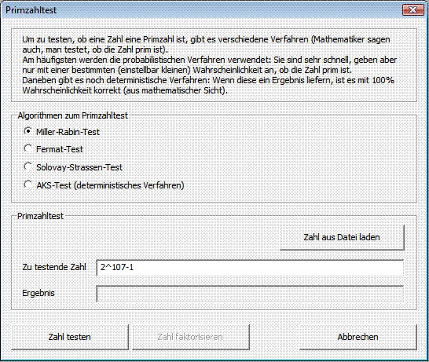

Sie können diesen Dialog über das Menü Einzelverfahren \ RSA-Kryptosystem \ Primzahltest aufrufen.
Primzahlen sind natürliche Zahlen größer 1, die nur durch die 1 und durch sich selbst teilbar sind. Sie spielen in der Kryptographie eine wichtige Rolle. Im Dialog Primzahltest können Sie eine Zahl (oder Formel) eingeben und testen, ob diese eine Primzahl ist oder nicht.

Durch Betätigen des Buttons Zahl testen wird geprüft, ob die in dem Eingabefeld "Zu testende Zahl oder Formel" enthaltene Zahl eine Primzahl ist oder nicht. In der Eingabe können direkt ganze Zahlen oder auch mathematische Ausdrücke (Terme) eingegeben werden.
Gegenwärtig können im Dialog nur positive ganze Zahlen bis zu einer Bitlänge von 8192 eingegeben werden. Dies entspricht Dezimalzahlen bis 2466 Stellen.
In diesem Dialog können Sie zwischen den folgenden Algorithmen zum Primzahltest wählen:
Die Tabelle zeigt, wie lange die verschiedenen Tests bei verschiedenen Primzahlen dauerten: Die Zeitmessungen wurden mit einem Intel Pentium-4 Prozessor, 2 GHz durchgeführt.
| Primzahl | Miller-Rabin | Fermat | Solovay-Strassen | AKS-Verfahren |
|---|---|---|---|---|
| 7309 | 0,01 | 0,01 | 0,01 | 12,34 |
| 9004097 | 0,01 | 0,01 | 0,01 | 23:22,55 |
| 2^31-1 | 0,01 | 0,01 | 0,01 | 6:03:14,36 |
| 2^607-1 | 0,61 | 0,61 | 1,62 | k.A. |
Tabelle: Zeitdauer der Algorithmen in Sekunden.
Über den Button Zahl aus Datei laden haben Sie die Möglichkeit, eine Zahl aus einer Textdatei einzulesen. Die Datei darf nur eine einzige Zahl oder einen Term beinhalten und dazu keinerlei Text. Leerzeichen oder Zeilenumbrüche innerhalb der Datei werden beim Einlesevorgang entfernt.
Mit einem Klick auf den Button Zahl faktorisieren können Sie den Dialog Faktorisieren einer Zahl aufrufen. Bitte beachten Sie, dass dieser Button nur dann aktiv ist, wenn das Ergebnis eines vorangegangenen Primzahltests negativ war. Nach dem Klick auf diesen Button wird die Nicht-Primzahl automatisch in den neuen Dialog eingefügt.
Ausführliche Informationen zum Thema Primzahlen finden Sie im CT-Buch. Weitere Informationen zum AKS-Test ("Primes in P") finden Sie hier.
[1] Agrawal, Kayal, Saxena, "PRIMES is in P", 2002, v6